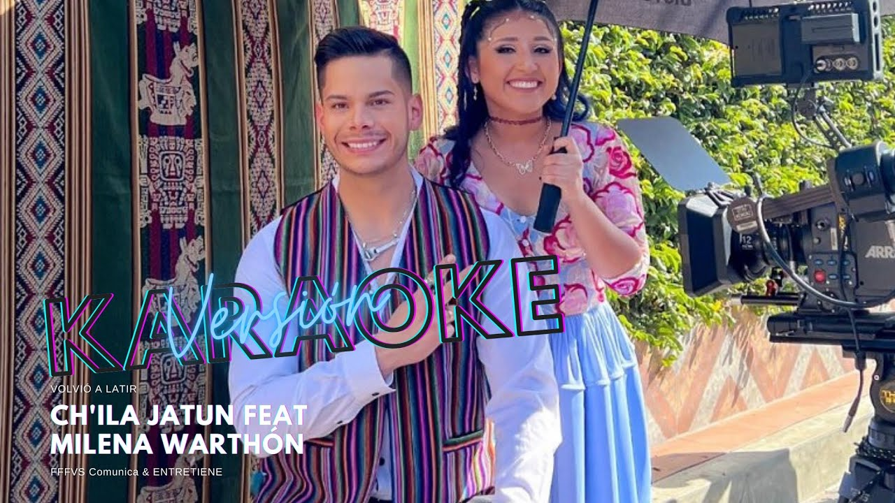
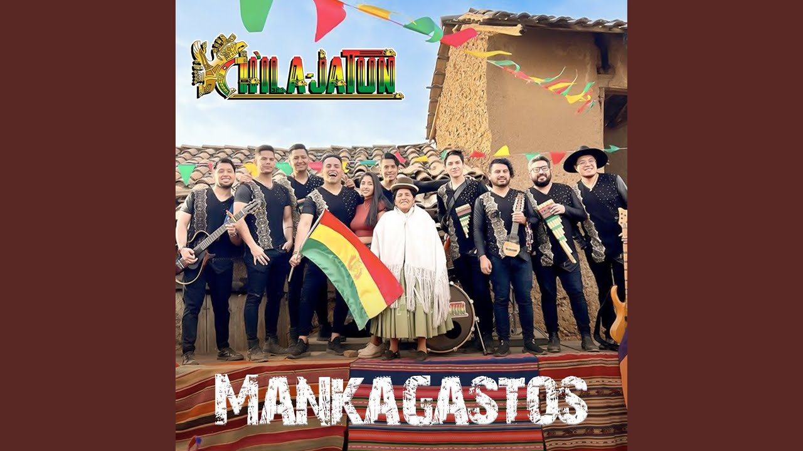

Los links de la DISCOGRAFIA de Chila Jatun y elINICIO de la pagina
LA MUSICA DE CHILA JATUN
AMÉRICA SUR – 2008
América Sur (Tunga)
Ella es música (Tinku)
Amor de niño (Canción boliviana)
Flor Morena (Tobas)
Soñé (Tinku)
La flaca (Saya)
Páginas de archivo (Canción boliviana)
Hombre de hoy (Tunga)
Si me faltaras (Trote)
De Bolivia al Ecuador (Canción boliviana)
Si te vuelvo a encontrar (Saya)
Tu traición (Morenada) Ángeles (Chuntunqui)
Fiesta Andina (K’antu-Choqueleada-Sicureada)
San Simón (Saya)
K’ANCHAY – 2010
Yana awi (K'antu)
Amantes (Canción)
Que seas feliz (Chuntunqui)
La letal (Morenada)
Solo tu (Tinku)
Mal recuerdo (Afrotunga)
Condes Achalay (Saya)
Resistir (Tinku)
Mi niña (Carnavalito)
Kolilitay (Llamerada)
Ah Cochabamba (Saya)
ROMPIENDO FRONTERAS – 2013
Rompiendo Fronteras (Pujllay)
Lloré por ti (Canción)
Boquita de miel (Huayño-Phuna)
Ñawpaq Warmisita (Tinku)
No sabes amar (Chuntunqui)
La infernal (Diasblada)
A ti te debo (Taquirari)
Amor cruel (Canción)
Eres tú (Saya)
Como duele (Morenada)
Corre mi niño (Carnavalito)
JUSTICIA PARA VIVIR – 2016
Amor sagrado (K’antu)
Adicto a nuetro amor (Rumba Flamenca)
Me cansé de amarte (Chuntunqui-Sicuri)
Bella mujer (Tinku)
Llorarás (Saya)
A Mamá (Huayño-Phuna -Salaque)
Mujer del campo (Tinku)
Justicia para vivir (Hayño-Phuna)
Flor chapaca (Tonada Chapaca)
Amor verdadero (Saya)
Charanguito Boliviano (Carnavalito)
Volvio a latir
Musica con Milena Warthon x Chila Jatun
Esta musica es una de mis favoritas por que combina el tinku con el el pop
Es una gran union de la musica de Bolivia con la de Peru que simplemente fue epica :3
link video

Mankagastos
Musica con Ale Pinedo x Chila Jatun
Esta musica es una musica que representa a los flojos XD o bueno al ritmo del tinku.
con ale pinedo en colabroacion, mankagasto en aymara es que no sabe hacer nada y vive a costa de otros :3
link Mankagastos

Tinkus para el mundo
Musica de Chila Jatun
Esta musica es una musica que representa la cultura bolivia al ritmo del tinku.
es un gran exito que recien salio.
link Tinkus para el mundo